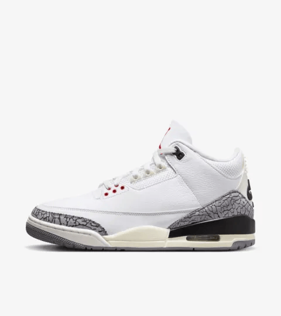
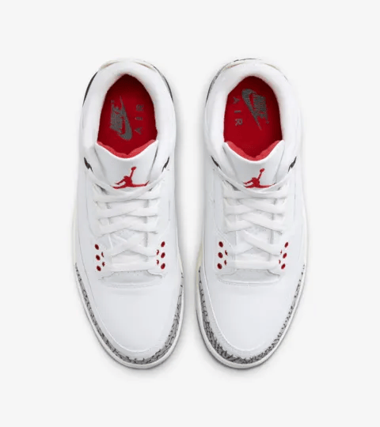
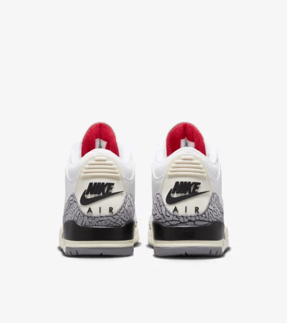
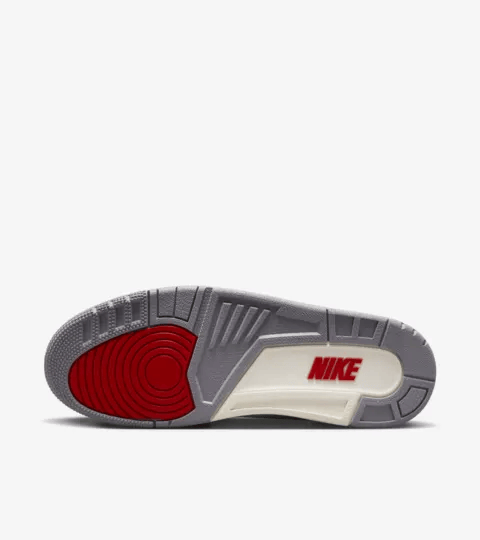

The Air Jordan 3 White Cement is a legendary sneaker that holds a special place in both basketball history and sneaker culture. Originally released in 1988, it was designed by Tinker Hatfield and became famous for its iconic elephant print and the visible Air unit in the heel, which provided both style and comfort. The White Cement colorway features a predominantly white leather upper, complemented by black and cement gray accents, making it a versatile and timeless choice for sneaker enthusiasts.
One of the defining moments for the Air Jordan 3 White Cement was its association with Michael Jordan during the 1988 NBA Dunk Contest, where he delivered a memorable performance while wearing this very model. This moment helped cement the sneaker's status as an icon in sports history, showcasing its connection to Jordan’s legacy. The White Cement not only highlights Jordan's athletic prowess but also reflects the innovative spirit of the late '80s basketball era.
The sneaker's design elements, such as the Jumpman logo on the tongue and the Air Jordan branding on the heel, contribute to its distinct identity. Over the years, the Air Jordan 3 White Cement has been re-released in various iterations, each time generating excitement among fans. Its classic aesthetic and rich history make it a sought-after piece for collectors and casual wearers alike.
In essence, the Air Jordan 3 White Cement is more than just a sneaker; it represents a blend of performance, style, and cultural significance. Whether on the court or the streets, this sneaker continues to leave a lasting impact, reminding us of its pivotal role in the evolution of basketball footwear and sneaker culture as a whole.
   